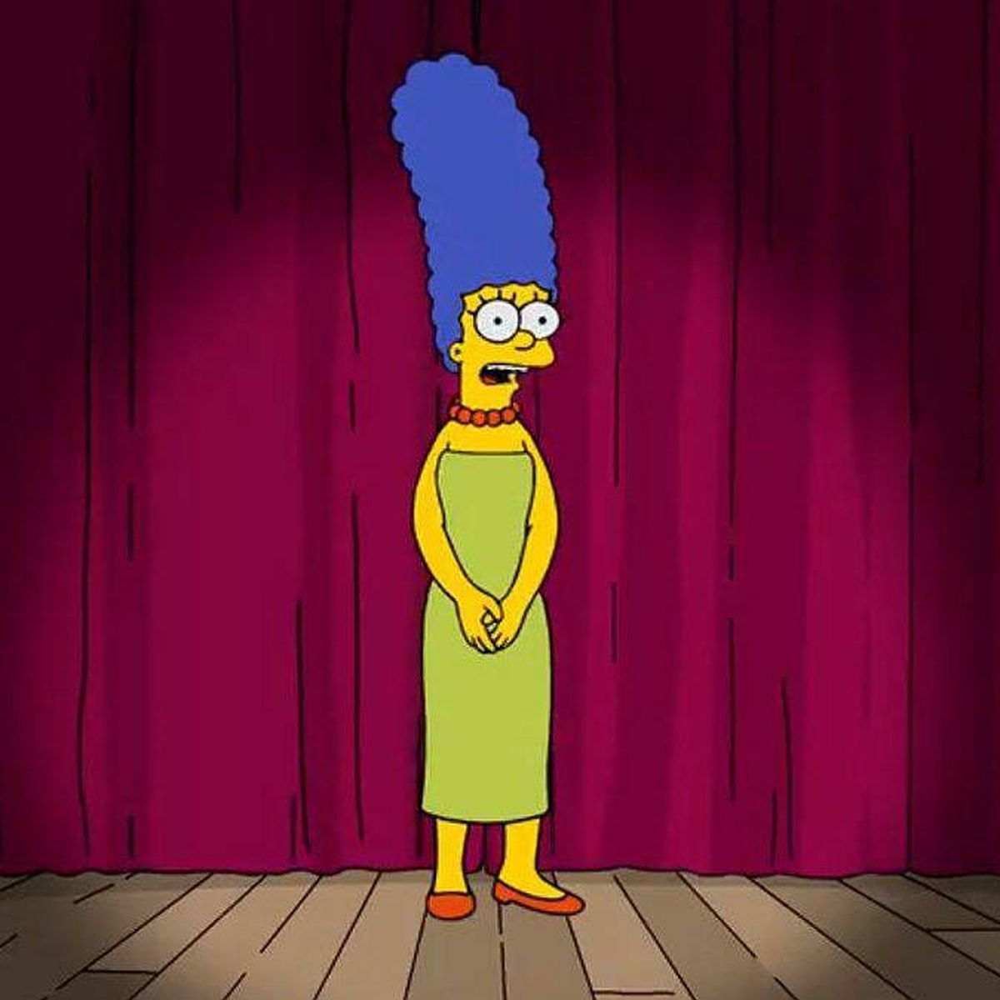
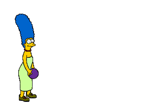
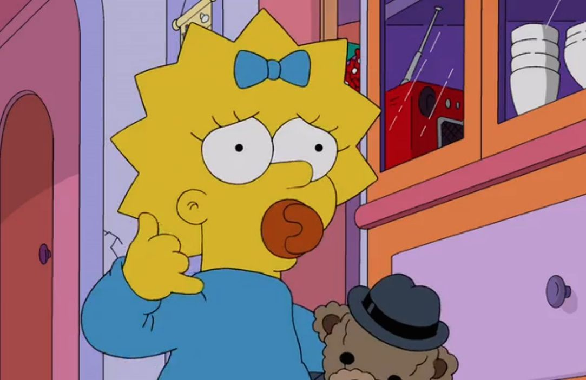

Homer Jay Simpson es un personaje ficticio protagonista de la serie de televisión de dibujos animados Los Simpson. Es el padre de la familia protagonista y uno de los personajes centrales más importantes de la serie.
Homero

Marjorie Jacqueline Bouvier más conocida como Marge Simpson es un personaje ficticio de la serie de televisión de dibujos animados Los Simpson.
Marge

Bart Simpson es un personaje ficticio de la serie de televisión Los Simpson. Es el prototipo del niño de clase media estadounidense: travieso y desobediente.
Bart
Es la hija mediana de Homer y Marge Simpson y hermana de Bart y Maggie. Goza de notable protagonismo y complejidad en la serie.
Lisa

Es la tercera hija del matrimonio protagonista, Homer y Marge Simpson, y la más joven de ellos. Sus hermanos mayores son Bart y Lisa Simpson.